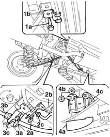

3380A40 linkage supports and idlers - r+r
- Path
- Procedures > 33 BRAKING SYSTEM > 3380 HANDBRAKE > 3380A handbrake control and linkage > 3380A40 linkage supports and idlers - r+r
- Kind
- repair procedure (removal / refitting; the operation number is the code)
- Applies to
- all engines; all production periods
- Interactive page
- https://sloeber94.github.io/elrnDB-fMltpl/en/#/2891666
Applies to: all engines; all production periods
 Removing
Removing
 Refitting
RefittingPlace the car on a lift.
Raise the ramp.
1. Undo the fixing nut (1a) and remove the support (1b) for the right rear drum flexible cable.
2. Remove the spring (2a) and, using the tool (2b), undo the connector (2c).
 | Name | Country |
|---|---|---|
2a | Box wrench for brake fittings | 1.856.132.000 |
3. Undo the fixing bolt (3a), release the handbrake cable (3b) and remove the mounting bracket (3c).
4. Remove the plastic protection (4a) for the cable guide support, undo the fixing nuts (4b) and remove the cable mounting bracket (4c).

Applies to: all engines; all production periods
Refitting
RemovingPosition the cable guide support, tighten the fixing nuts and fit the plastic protection.
Position the left rear drum cable mounting bracket and insert the handbrake cable in the special housing.
Tighten the bracket fixing bolts to torque.
 | Fastening | Component | Ø | Value (daNm) |
|---|---|---|---|---|
- | Bolt | HANDBRAKE LINKAGE MOUNTS | M8 | 2.5 |
Connect the two ends of the rear brake pipe and, using the tool, secure the connector nut.
| Name | Country |
|---|---|---|
- | Box wrench for brake fittings | 1.856.132.000 |
Fit the right rear drum cable mounting bracket and position the cable in the special housing.
Tighten the fixing bolt to torque.
| Fastening | Component | Ø | Value (daNm) |
|---|---|---|---|---|
- | Bolt | HANDBRAKE LINKAGE MOUNTS | M8 | 2.5 |